Publications
* indicates that authors contributed equally.
The following manuscripts are still in progress. Suggestions are welcome.
 Yijiang Huang, Josephine Carstensen, Lavender Tessmer and Caitlin Mueller
Yijiang Huang, Josephine Carstensen, Lavender Tessmer and Caitlin Mueller
“Robotic extrusion of architectural structures with nonstandard topology,”
In: Robotic Fabrication in Architecture, Art and Design 2018.
[BibTeX] [PDF] [DOI] [Code-ROS]
 Lei Yu, Yijiang Huang, Zhongyuan Liu, Sai Xiao, Ligang Liu, Guoxian Song, Yanxin Wang
Lei Yu, Yijiang Huang, Zhongyuan Liu, Sai Xiao, Ligang Liu, Guoxian Song, Yanxin Wang
“Highly Informed Robotic 3D Printed Polygon Mesh - A Novel Strategy of 3D Spatial Printing,”
In: Conference of The Association for Computer Aided Design in Architecture (ACADIA), 2016.
[BibTeX] [PDF] [CumInCAD Port]
Preprints
The following manuscripts are still in progress. Suggestions are welcome.
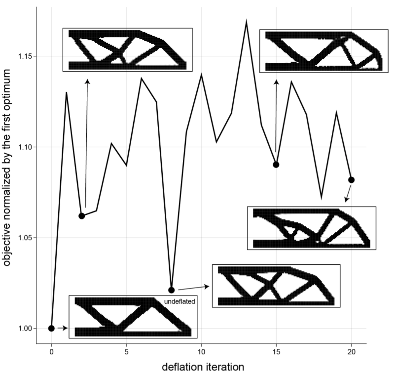
Mohamed Tarek, Yijiang Huang
“Simplifying deflation for non-convex optimization with applications in Bayesian inference and topology optimization,”
arxiv 2201.11926.
[BibTeX] [arxiv:2201.11926] [Code]
“Simplifying deflation for non-convex optimization with applications in Bayesian inference and topology optimization,”
arxiv 2201.11926.
[BibTeX] [arxiv:2201.11926] [Code]
@article{tarek2022deflation,
title={Simplifying deflation for non-convex optimization with applications in Bayesian inference and topology optimization},
author={Tarek, Mohamed and Huang, Yijiang},
journal={arXiv preprint arXiv:2201.11926},
year={2022}
}
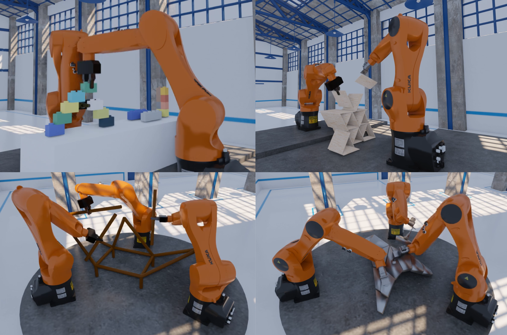
Jingkai Chen, Jiaoyang Li*, Yijiang Huang*, Caelan Garrett, Dawei Sun, Chuchu Fan, Andreas Hofmann, Caitlin Mueller, Sven Koenig, Brian C. Williams
“Cooperative Task and Motion Planning for Multi-Arm Assembly Systems,”
arxiv 2203.02475.
[BibTeX] [arxiv:2203.02475] [Video demo]
“Cooperative Task and Motion Planning for Multi-Arm Assembly Systems,”
arxiv 2203.02475.
[BibTeX] [arxiv:2203.02475] [Video demo]
@article{chen2022coop,
title={Cooperative Task and Motion Planning for Multi-Arm Assembly Systems},
author={Chen, Jingkai and Li, Jiaoyang and Huang, Yijiang and Garrett, Caelan and Sun, Dawei and Fan, Chuchu and Hofmann, Andreas and Mueller, Caitlin and Koenig, Sven and Williams, Brian C.},
year={2022}, month={Mar},
url={http://arxiv.org/abs/2203.02475},
DOI={10.48550/arXiv.2203.02475},
note={arXiv:2203.02475 [cs]},
number={arXiv:2203.02475},
publisher={arXiv}
}
Published papers
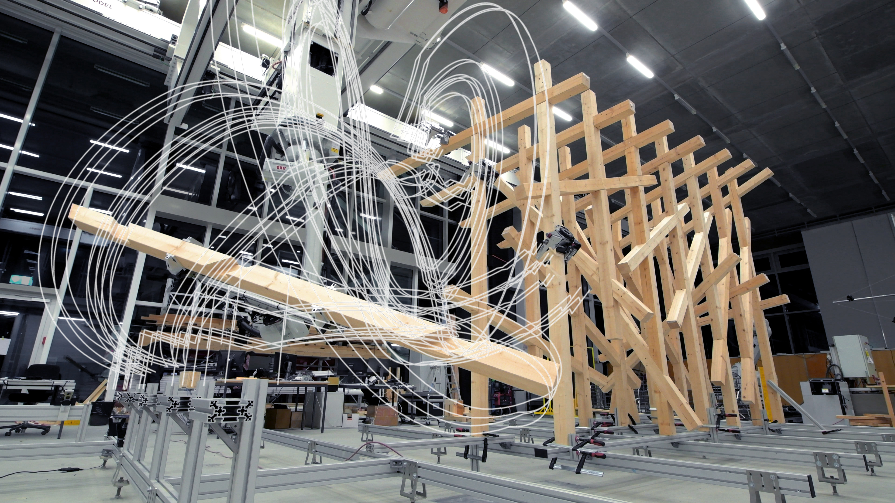
Yijiang Huang, Victor Pok Yin Leung, Caelan Garrett, Fabio Gramazio, Matthias Kohler, Caitlin Mueller
“The new analog: A protocol for linking design and construction intent with algorithmic planning for robotic assembly of complex structures,”
In: ACM Symposium on Computational Fabrication, 2021.
[BibTeX] [PDF] [Code]
“The new analog: A protocol for linking design and construction intent with algorithmic planning for robotic assembly of complex structures,”
In: ACM Symposium on Computational Fabrication, 2021.
[BibTeX] [PDF] [Code]
@inproceedings{huang2021analog,
author = {Huang, Yijiang and Leung Pok Yin Victor and Garrett, Caelan and Gramazio, Fabio and Kohler, Matthias and Mueller, Caitlin},
title = {The new analog: A protocol for linking design and construction intent with
algorithmic planning for robotic assembly of complex structures},
year = {2021},
publisher = {Association for Computing Machinery},
booktitle = {Symposium on Computational Fabrication},
series = {SCF '21},
doi = {https://doi.org/10.1145/3485114.3485122}
}
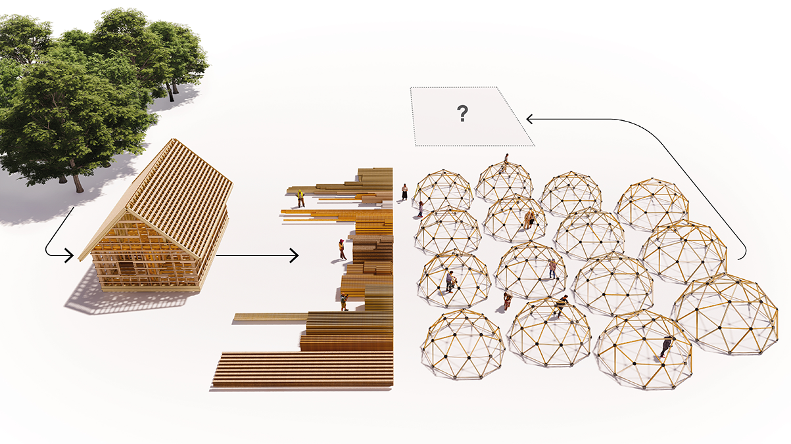
Yijiang Huang, Latifa Alkhayat, Catherine De Wolf, Caitlin T. Mueller
“Algorithmic circular design with reused structural elements: Method and Tool,”
International FIB symposium of Conceptual Design of Structures, 2021.
[BibTeX] [PDF] [fib port] [Code]
“Algorithmic circular design with reused structural elements: Method and Tool,”
International FIB symposium of Conceptual Design of Structures, 2021.
[BibTeX] [PDF] [fib port] [Code]
@inproceedings{huang2021circular,
title={Algorithmic circular design with reused structural elements: Method and Tool},
author={Huang, Yijiang and Alkhayat, Latifa and De Wolf, Catherine and Mueller, Caitlin Tobin},
booktitle={Proceedings of International FIB symposium of Conceptual Design of Structures},
year={2021}
}
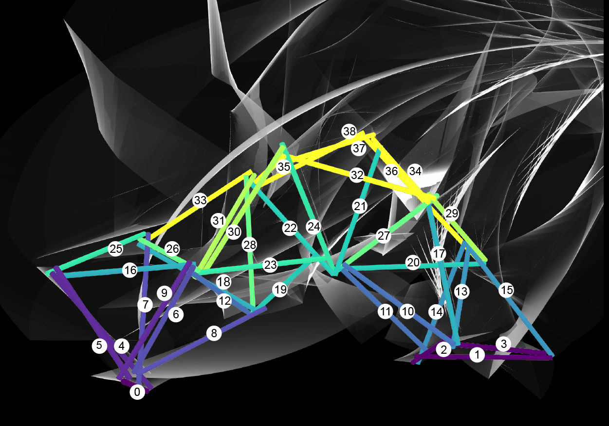
Yijiang Huang, Caelan R. Garrett, Ian Ting, Stefana Parascho, Caitlin T. Mueller
“Robotic additive construction of bar structures: Unified sequence and motion planning,”
Construction Robotics, vol. 5, pp. 115-130, 2021.
[BibTeX] [arXiv:2105.11438] [DOI] [Youtube videos] [Code]
“Robotic additive construction of bar structures: Unified sequence and motion planning,”
Construction Robotics, vol. 5, pp. 115-130, 2021.
[BibTeX] [arXiv:2105.11438] [DOI] [Youtube videos] [Code]
@article{huang2021barassembly,
title={Robotic additive construction of bar structures: Unified sequence and motion planning},
author={Huang, Yijiang and Garrett, Caelan Reed and Ting, Ian and Parascho, Stefana and Mueller, Caitlin Tobin},
journal={Construction Robotics},
pages={115--130},
year={2021},
publisher={Springer}
}
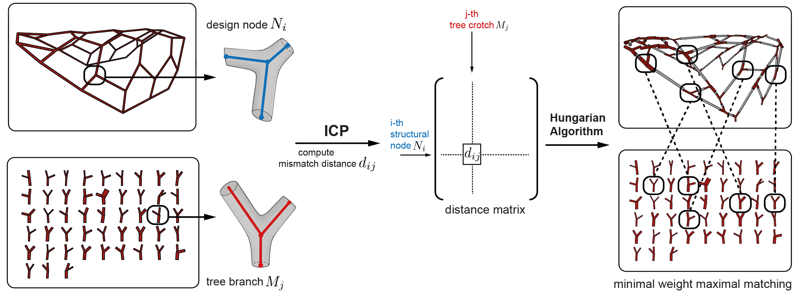
Felix Amtsberg*, Yijiang Huang*, Daniel J.M. Marshall, Kevin Moreno Gata, Caitlin Mueller
“Structural upcycling: Matching digital and natural geometry,”
Advances in Architectural Geometry, 2020.
[BibTeX] [PDF] [Talk-Youtube] [MIT news] [Dezeen]
“Structural upcycling: Matching digital and natural geometry,”
Advances in Architectural Geometry, 2020.
[BibTeX] [PDF] [Talk-Youtube] [MIT news] [Dezeen]
@inproceedings{amtsberg2020tree,
title={Structural upcycling: Matching digital and natural geometry},
author={Amtsberg, Felix and Huang, Yijiang and Marshall, Daniel J.M. and Gata, Kevin Moreno and Mueller, Caitlin},
booktitle={Proceedings of Advances in Architectural Geometry},
year={2020}
}
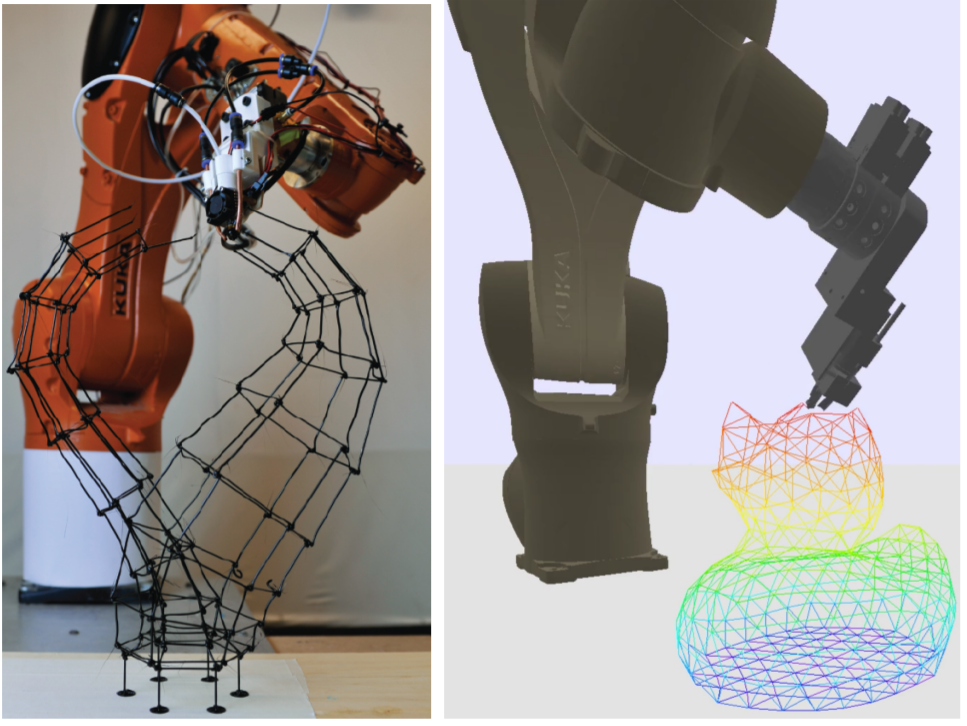
Caelan R. Garrett*, Yijiang Huang*, Tomás Lozano-Pérez, Caitlin T. Mueller
“Scalable and Probabilistically Complete Planning for Robotic Spatial Extrusion,”
In: Robotics: Science and Systems (RSS), 2020
[BibTeX] [arXiv:2002.02360] [RSS port] [Talk] [Youtube] [Code]
“Scalable and Probabilistically Complete Planning for Robotic Spatial Extrusion,”
In: Robotics: Science and Systems (RSS), 2020
[BibTeX] [arXiv:2002.02360] [RSS port] [Talk] [Youtube] [Code]
@inproceedings{garrett2020scalable,
title={Scalable and Probabilistically Complete Planning for Robotic Spatial Extrusion},
author={Garrett, Caelan Reed and Huang, Yijiang and Lozano-P{\'e}rez, Tom{\'a}s and Mueller, Caitlin Tobin},
booktitle={Robotics: Science and Systems (RSS)},
year={2020}
}
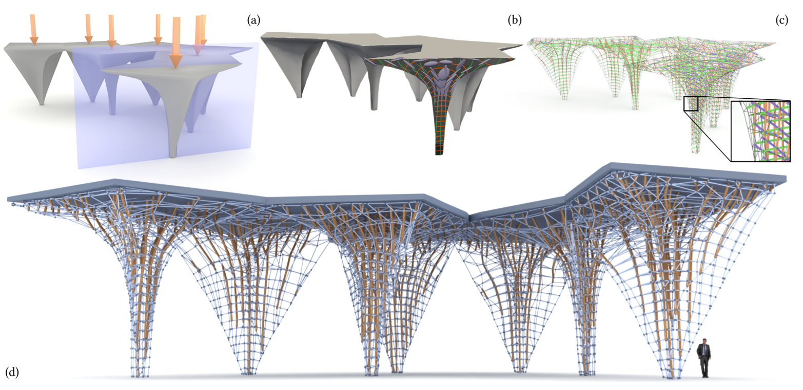
Rahul Arora, Alec Jacobson, Timothy R. Langlois, Yijiang Huang, Caitlin Mueller, Wojciech Matusik, Ariel Shamir, Karan Singh, David I.W. Levin
“Volumetric Michell trusses for parametric design & fabrication,”
In: ACM Symposium on Computational Fabrication, 2019.
[BibTeX] [PDF] [ACM Port] [Project (code, talk and more)]
“Volumetric Michell trusses for parametric design & fabrication,”
In: ACM Symposium on Computational Fabrication, 2019.
[BibTeX] [PDF] [ACM Port] [Project (code, talk and more)]
@inproceedings{arora2019michell,
author = {Arora, Rahul and Jacobson, Alec and Langlois, Timothy R. and Huang, Yijiang
and Mueller, Caitlin and Matusik, Wojciech and Shamir, Ariel and
Singh, Karan and Levin, David I.W.},
title = {Volumetric Michell Trusses for Parametric Design \& Fabrication},
booktitle = {Proceedings of the 3rd ACM Symposium on Computation Fabrication},
series = {SCF '19},
year = {2019},
location = {Pittsburgh, PA, USA},
numpages = {13},
publisher = {ACM},
address = {New York, NY, USA}
}
Lavender Tessmer, Yijiang Huang, Caitlin Mueller
“Additive Casting of Mass-Customizable Bricks: Workflow for Design and Robotic Fabrication,”
In: Conference of The Association for Computer Aided Design in Architecture (ACADIA), 2019.
[BibTeX] [PDF] [CumInCAD Port] [Project]
“Additive Casting of Mass-Customizable Bricks: Workflow for Design and Robotic Fabrication,”
In: Conference of The Association for Computer Aided Design in Architecture (ACADIA), 2019.
[BibTeX] [PDF] [CumInCAD Port] [Project]
@inproceedings{tessmer2019acadia,
title={Additive Casting of Mass-Customizable Bricks: Workflow for Design and Robotic Fabrication},
author={Tessmer, Lavender and Huang, Yijiang and Mueller, Caitlin},
booktitle={Proceedings of the 39st Annual Conference of the Association for Computer Aided Design in Architecture (ACADIA)},
year={2019}
}
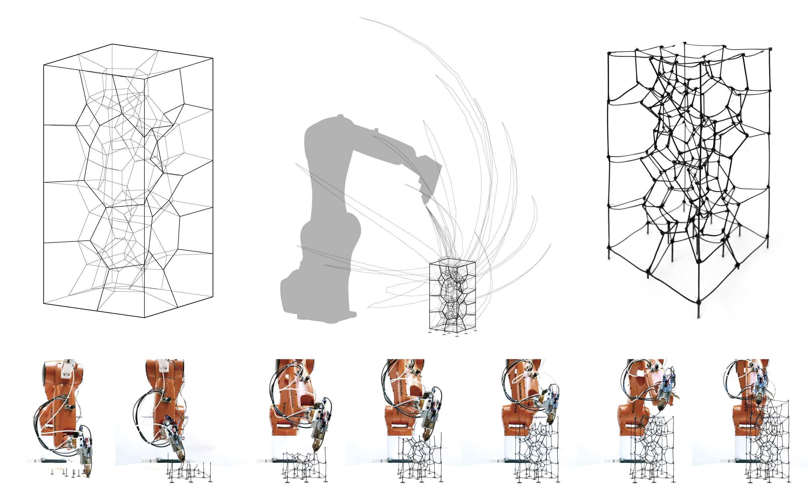
Yijiang Huang, Caelan R. Garrett, Caitlin T. Mueller
“Automated sequence and motion planning for robotic spatial extrusion of 3D trusses,”
Construction Robotics, vol. 2, no. 1-4, pp. 15-39, 2018.
[BibTeX] [arXiv:1810.00998] [DOI] [Youtube videos] [Code-ROS]
“Automated sequence and motion planning for robotic spatial extrusion of 3D trusses,”
Construction Robotics, vol. 2, no. 1-4, pp. 15-39, 2018.
[BibTeX] [arXiv:1810.00998] [DOI] [Youtube videos] [Code-ROS]
@article{huang2018automated,
title={Automated sequence and motion planning for robotic spatial extrusion of 3D trusses},
author={Huang, Yijiang and Garrett, Caelan R and Mueller, Caitlin T},
journal={Construction Robotics},
pages={15--39},
year={2018},
publisher={Springer}}
Yijiang Huang, Josephine Carstensen, Lavender Tessmer and Caitlin Mueller
“Robotic extrusion of architectural structures with nonstandard topology,”
In: Robotic Fabrication in Architecture, Art and Design 2018.
[BibTeX] [PDF] [DOI] [Code-ROS]
@inproceedings{huang2018robarch,
title={Robotic extrusion of architectural structures with nonstandard topology},
author={Huang, Yijiang and Carstensen, Josephine and Tessmer, Lavender and Mueller, Caitlin},
booktitle={Robotic Fabrication in Architecture, Art and Design},
pages={377--389},
year={2018},
organization={Springer}
}
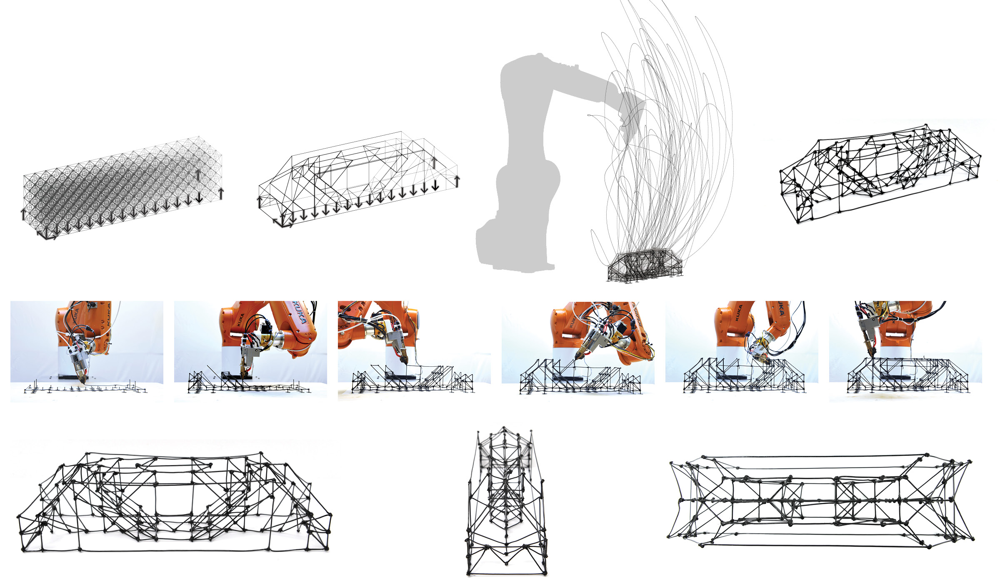
Yijiang Huang, Josephine Carstensen and Caitlin Mueller
“3D truss topology optimization for automated robotic spatial extrusion,”
In: International Association for Shell and Spatial Structures (IASS) 2018.
[BibTeX] [PDF] [Code-ROS]
“3D truss topology optimization for automated robotic spatial extrusion,”
In: International Association for Shell and Spatial Structures (IASS) 2018.
[BibTeX] [PDF] [Code-ROS]
@inproceedings{huang2018iass,
title={3D truss topology optimization for automated robotic spatial extrusion},
author={Huang, Yijiang and Carstensen, Josephine and Mueller, Caitlin},
booktitle={International Association for Shell and Spatial Structures (IASS)},
year={2018}
}
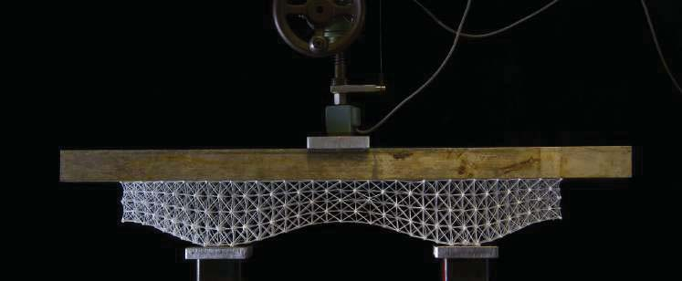
Kam-Ming Mark Tam, Daniel J. Marshall, Mitchell Gu, Jasmine Kim, Yijiang Huang, Justin Lavallee, Caitlin T. Mueller
“Fabrication-aware structural optimisation of lattice additive-manufactured with robot-arm,”
International Journal of Rapid Manufacturing, vol. 7, no. 2-3, pp. 120-168, 2018.
[BibTeX] [PDF] [DOI]
“Fabrication-aware structural optimisation of lattice additive-manufactured with robot-arm,”
International Journal of Rapid Manufacturing, vol. 7, no. 2-3, pp. 120-168, 2018.
[BibTeX] [PDF] [DOI]
@article{tam2018fabrication,
title={Fabrication-aware structural optimisation of lattice additive-manufactured with robot-arm},
author={Tam, Kam-Ming Mark and Marshall, Daniel J and Gu, Mitchell and Kim, Jasmine and Huang, Yijiang and Lavallee, Justin and Mueller, Caitlin T},
journal={International Journal of Rapid Manufacturing},
volume={7},
number={2-3},
pages={120--168},
year={2018},
publisher={Inderscience Publishers (IEL)}
}
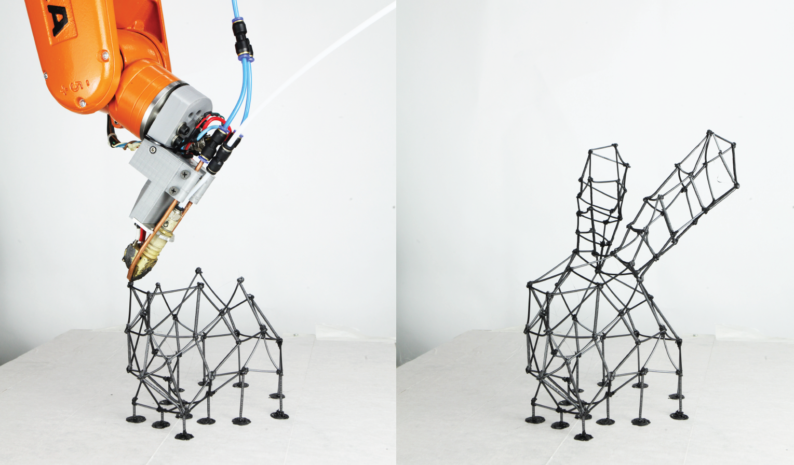
Yijiang Huang, Juyong Zhang, Xin Hu, Guoxian Song, Zhongyuan Liu, Lei Yu and Ligang Liu
“FrameFab: Robotic Fabrication of Frame Shapes,”
ACM Transactions on Graphics (TOG), vol. 35, no. 6, pp. 224:1--224:11 2016.
[BibTeX] [PDF] [ACM-DL Port] [Code] [Video]
“FrameFab: Robotic Fabrication of Frame Shapes,”
ACM Transactions on Graphics (TOG), vol. 35, no. 6, pp. 224:1--224:11 2016.
[BibTeX] [PDF] [ACM-DL Port] [Code] [Video]
@article{huang2016framefab,
author = {Huang, Yijiang and Zhang, Juyong and Hu, Xin and Song, Guoxian and Liu, Zhongyuan and Yu, Lei and Liu, Ligang},
title = {FrameFab: Robotic Fabrication of Frame Shapes},
journal = {ACM Trans. Graph.},
issue_date = {November 2016},
volume = {35},
number = {6},
month = nov,
year = {2016},
issn = {0730-0301},
pages = {224:1--224:11},
articleno = {224},
numpages = {11},
url = {http://doi.acm.org/10.1145/2980179.2982401},
doi = {10.1145/2980179.2982401},
acmid = {2982401},
publisher = {ACM},
address = {New York, NY, USA},
}
Lei Yu, Yijiang Huang, Zhongyuan Liu, Sai Xiao, Ligang Liu, Guoxian Song, Yanxin Wang
“Highly Informed Robotic 3D Printed Polygon Mesh - A Novel Strategy of 3D Spatial Printing,”
In: Conference of The Association for Computer Aided Design in Architecture (ACADIA), 2016.
[BibTeX] [PDF] [CumInCAD Port]
@inproceedings{yu2016acadia,
title={Highly Informed Robotic 3D Printed Polygon Mesh: A Novel Strategy of 3D Spatial Printing},
author={Yu, Lei and Huang, Yijiang and Liu, Zhongyuan and Xiao, Sai and Liu, Ligang and Song, Guoxian and Wang, Yanxin},
booktitle={Proceedings of the 36st Annual Conference of the Association for Computer Aided Design in Architecture (ACADIA)},
year={2016},
pages={298-307},
}
Conference Abstracts and Talks
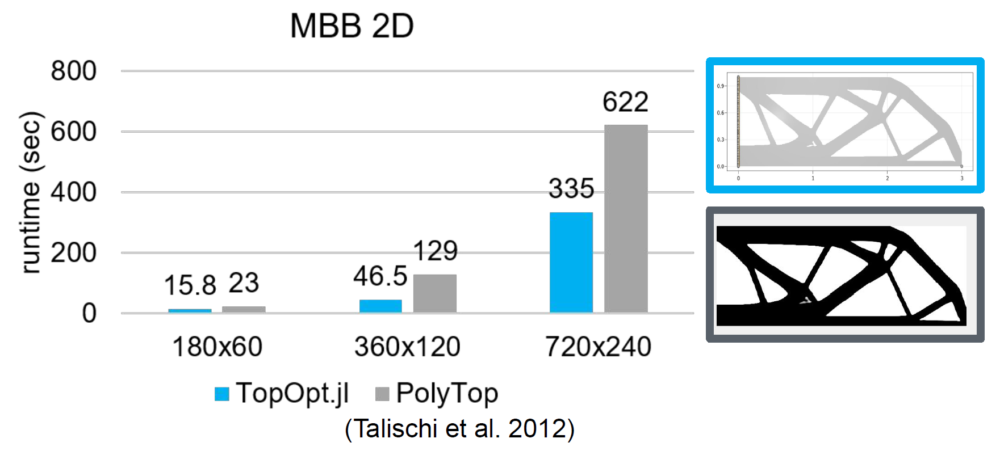
Yijiang Huang and Mohamed Tarek
“TopOpt.jl: Truss and Continuum Topology Optimization, Interactive Visualization, Automatic Differentiation and More,”
In: 14th World Congress of Structural and Multidisciplinary Optimization (2021).
[BibTeX] [Abstract-PDF] [WCSMO14-Talk-Youtube] [JuliaCon-Talk-Youtube]
[TopOpt.jl] [Demo and Benchmark code]
“TopOpt.jl: Truss and Continuum Topology Optimization, Interactive Visualization, Automatic Differentiation and More,”
In: 14th World Congress of Structural and Multidisciplinary Optimization (2021).
[BibTeX] [Abstract-PDF] [WCSMO14-Talk-Youtube] [JuliaCon-Talk-Youtube]
[TopOpt.jl] [Demo and Benchmark code]
@inproceedings{huang2021topoptjl,
title={TopOpt.jl: Truss and Continuum Topology Optimization, Interactive Visualization, Automatic Differentiation and More},
author={Huang, Yijiang and Tarek, Mohamed},
booktitle={Proceedings of the 14th World Congress of Structural and Multidisciplinary Optimization},
year={2021}
}
“Scalable planning for robotic spatial extrusion,”
DigitalFUTURES Young : Robotic Fabrication 3, 2020.
[Youtube]
DigitalFUTURES Young : Robotic Fabrication 3, 2020.
[Youtube]
Theses
Yijiang Huang,
“Algorithmic planning for robotic assembly of building structures,”
Ph.D. dissertation, Massachusetts Institute of Technology, September 2022, supervised by Caitlin Mueller.
[BibTeX] [PDF]
“Algorithmic planning for robotic assembly of building structures,”
Ph.D. dissertation, Massachusetts Institute of Technology, September 2022, supervised by Caitlin Mueller.
[BibTeX] [PDF]
@phdthesis{huang2022dissertation,
author = {Huang, Yijiang},
title = {Algorithmic planning for robotic assembly of building structures},
school = {Massachusetts Institute of Technology},
year = {2022},
}
Yijiang Huang,
“Automated Motion Planning for Robotic Assembly of Discrete Architectural Structures,”
Master Thesis, Massachusetts Institute of Technology, June 2018, supervised by Caitlin Mueller.
[BibTeX] [MIT-DSpace]
“Automated Motion Planning for Robotic Assembly of Discrete Architectural Structures,”
Master Thesis, Massachusetts Institute of Technology, June 2018, supervised by Caitlin Mueller.
[BibTeX] [MIT-DSpace]
@mastersthesis{yijiangthesis2018,
author = {Huang, Yijiang},
title = {Automated Motion Planning for Robotic Assembly of Discrete Architectural Structures},
school = {Massachusetts Institute of Technology},
year = {2018}}